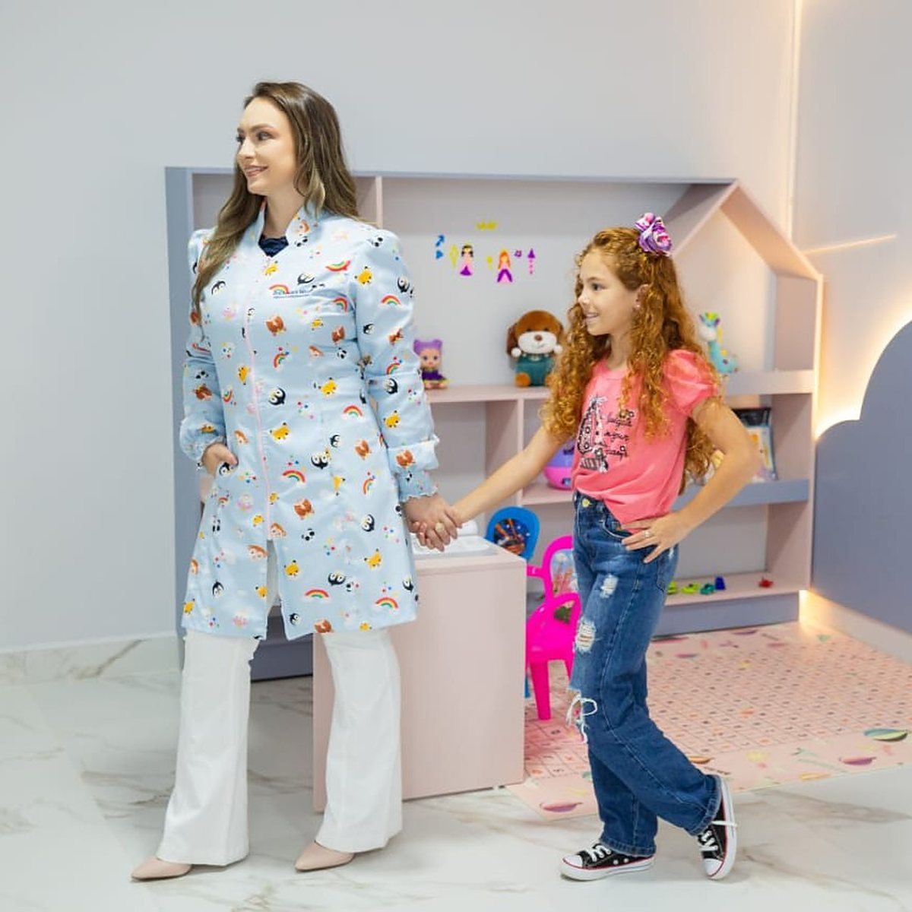
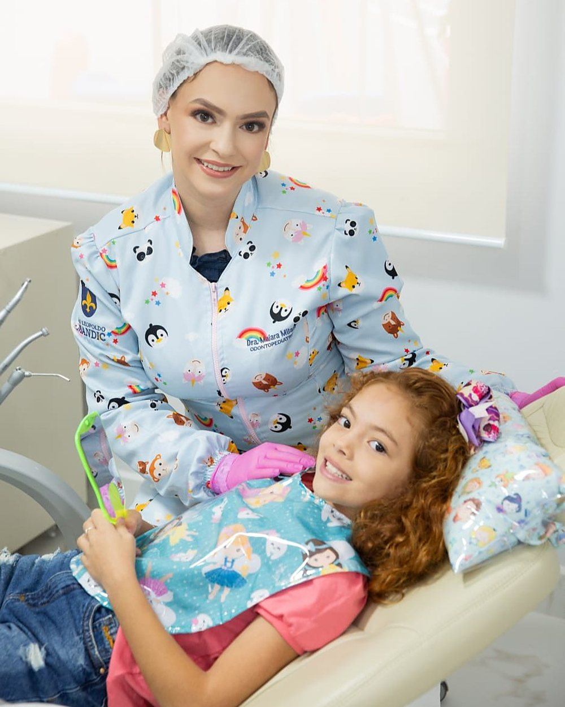
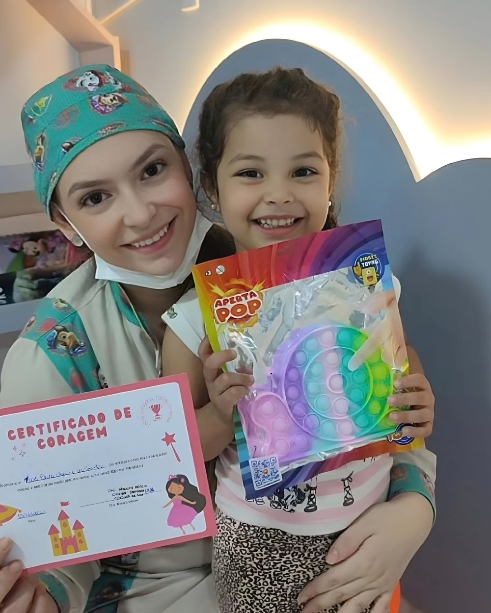
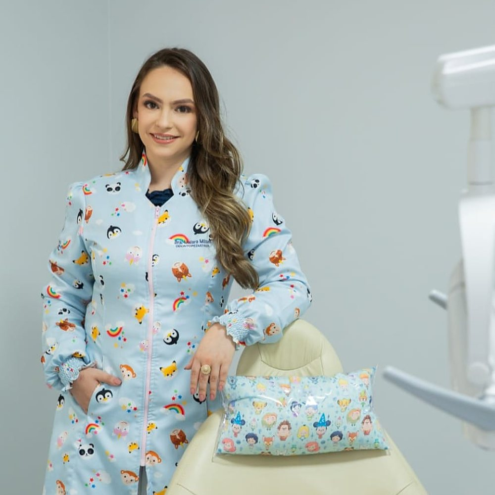
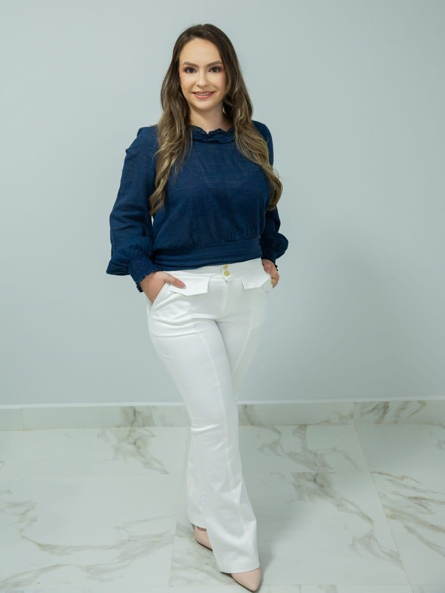
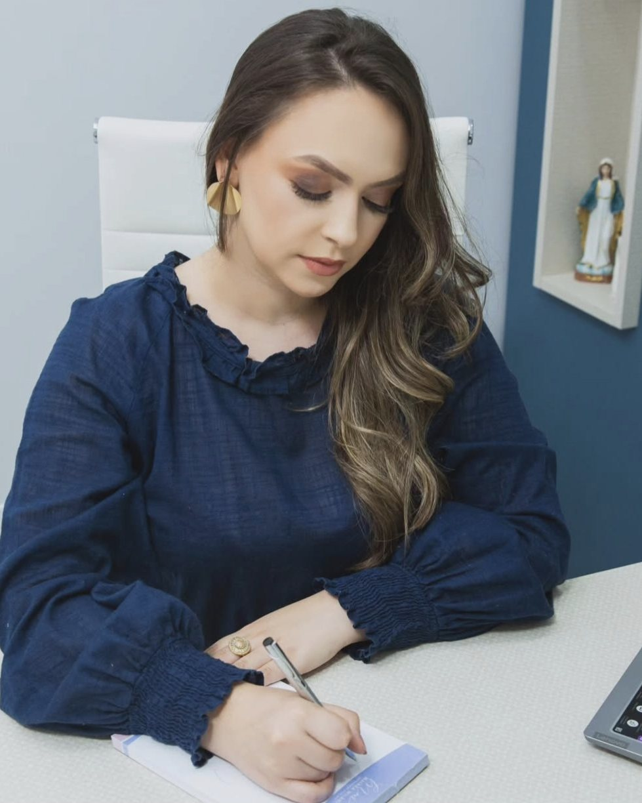
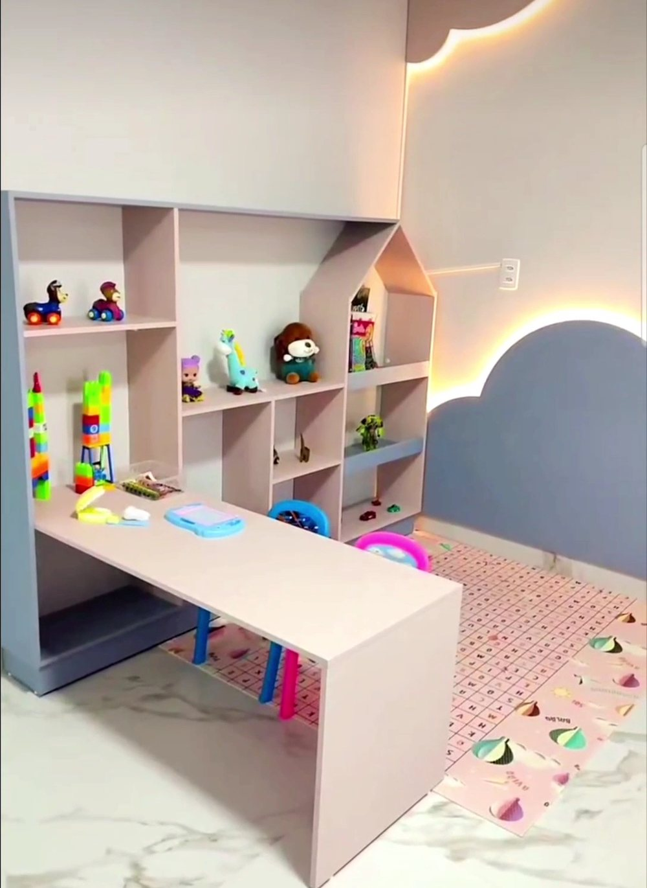
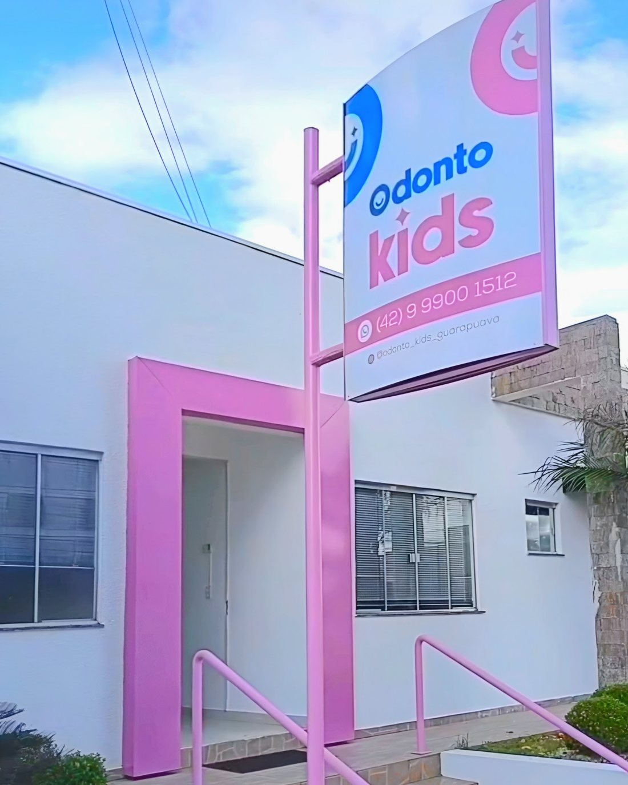
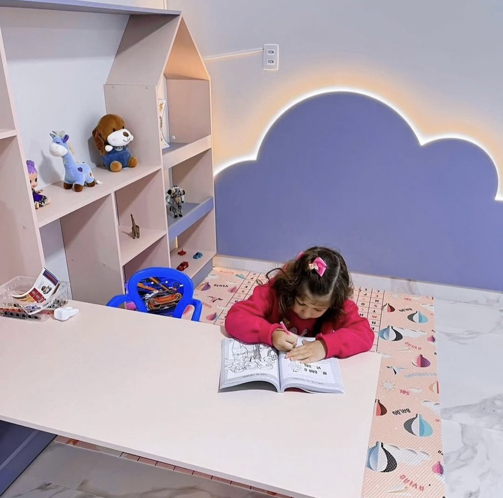

Odontopediatria em Guarapuava
O dentista que a criança pede pra voltar.
Na Odonto Kids, a consulta começa brincando. A Dra. May mostra tudo antes de fazer, respeita o tempo de cada criança e cuida dos dentinhos com técnica e paciência: da primeira visita ao aparelho, inclusive para crianças com autismo.
Na Odonto Kids, a consulta começa brincando. A Dra. May mostra tudo antes de fazer e respeita o tempo de cada criança: da primeira visita ao aparelho, inclusive para crianças com autismo.
Dra. Maiara Milani · Cirurgiã-dentista · CRO-PR 33549* · Odontopediatria*
★★★★★4,9no Google · 38 avaliações
Dra. May e uma paciente na sala dos brinquedos
A primeira consulta
Primeiro brincar, depois conhecer, só então cuidar.
Nenhuma criança senta na cadeira sem antes entender o que vai acontecer. É assim que o medo vira curiosidade, e a curiosidade vira vontade de voltar.

Chegar e brincar
A visita começa na sala dos brinquedos: desenho, pelúcias e o tempo que a criança precisar para se sentir em casa.

Conhecer a Tia May e o Tigrão
Cada coisinha é mostrada primeiro no Tigrão: a escova, o espelhinho, a luz. Sem surpresa, sem susto.

Sentar na cadeira, sem pressa
A criança sobe na cadeira quando quer. A avaliação é feita conversando, e os pais participam sempre que for preciso.

Certificado de Coragem
No fim do tratamento, cada criança recebe o seu certificado e escolhe um presente na gaveta. Sair com vontade de voltar faz parte do plano.
Na voz de uma paciente
"Ela mostra tudo antes de fazer. Por isso a visita ao dentista fica sem trauma."
O reel da clínica, contado por uma paciente: a chegada, a sala dos brinquedos, a Dra. Maiara mostrando cada instrumento no Tigrão antes de usar, e o presente escolhido na gaveta no fim da consulta.
- Os pais entram junto e participam quando a Dra. pede.
- Crianças com autismo, verbais e não verbais, têm manejo e tempo próprios.
- Primeira visita pode ser só para conhecer. O tratamento começa quando a criança estiver pronta.
Tratamentos explicados para os pais
O que a Odonto Kids cuida, sem palavra difícil.
Cada item abre o WhatsApp já dizendo sobre o que a família quer falar. O valor depende da avaliação de cada criança, e é explicado com calma na consulta.
- 01Falar sobre isso
Primeira consulta e prevenção
Avaliação completa, limpeza, flúor e orientação de escovação e alimentação. O ideal é vir até o primeiro aninho, ou assim que nascer o primeiro dente.
- 02Falar sobre isso
Aparelho infantil (ortopedia dos maxilares)
Aparelhos personalizados, com as cores que a criança escolhe, que acompanham o crescimento da boca e corrigem mordida e respiração ainda no dente de leite. É a área de destaque da clínica.
- 03Falar sobre isso
Dentinho com cárie (restauração)
A cárie é removida e o dente é restaurado na cor do dente, com cada passo explicado para a criança antes de acontecer.
- 04Falar sobre isso
Tratamento de canal no dente de leite
Quando a cárie chega perto do nervo. O dente de leite é mantido até a hora certa de cair, protegendo o permanente que vem embaixo.
- 05Falar sobre isso
Extração de dente de leite
Quando o dentinho não cai sozinho ou não dá mais para salvar. Feita com manejo e anestesia adequados à idade, sem pressa.
- 06Falar sobre isso
Bateu o dente? Urgência infantil
Quedas e batidas no dente são comuns na infância. Quanto antes a criança for vista, maior a chance de salvar o dente.
- 07Falar sobre isso
Crianças com autismo (TEA)
Atendimento para crianças verbais e não verbais, com manejo específico para cada perfil: primeiro a adaptação ao ambiente e ao tempo da criança, depois o tratamento.
- 08Falar sobre isso
Sedação consciente*
Para casos em que a criança não consegue colaborar, com indicação individual e avaliação prévia.

Dra. May no consultório da Odonto Kids
* a confirmar com a Dra. May. Sem preço no site: cada plano é explicado na consulta.


Quem cuida
Dra. May, a Tia May dos pequenos.
Maiara Milani é cirurgiã-dentista com atuação em odontopediatria*. O jeito de cuidar nasceu ainda na faculdade, no contato com as crianças, quando ela entendeu que a odontologia podia ser diferente: sem pressa, sem medo e sem trauma.
Em 2025 esse jeito ganhou endereço: a Odonto Kids, no bairro Santa Cruz, com sala dos brinquedos, prateleiras em forma de nuvem e o Tigrão de plantão. Hoje ela também é mãe do Nicolas, e cuida de cada criança como gostaria que cuidassem do filho dela. A clínica é tocada por ela e pelo Alisson, que a acompanha em tudo.
- RegistroCirurgiã-dentista · CRO-PR 33549*
- ÁreaOdontopediatria* · ortopedia funcional dos maxilares
- FormaçãoA confirmar com a Dra.*
- A clínicaOdonto Kids, desde 2025 · R. Frei Caneca, 2271, Santa Cruz, Guarapuava
O espaço
Uma clínica que parece quarto de brincar.
A sala dos brinquedos, as prateleiras em nuvem com luz quente, a cadeira que vira nave, o Tigrão e a gaveta dos presentes. Tudo pensado para a criança se sentir segura desde a porta rosa.



O que os pais dizem
Pais que vieram de outras cidades, crianças que tinham medo e hoje pedem para voltar, famílias de crianças com autismo que encontraram atendimento. Está tudo lá, em público.

"Minha filha tinha trauma de dentista e não estávamos conseguindo cuidar da saúde bucal dela. Agora entra correndo e espera ansiosa pelo dia do atendimento."
Mãe de paciente · avaliação no Google
"Meu filho é autista nível 3. Foi o único lugar que conseguiu atender ele, até me surpreendi."
Mãe de paciente · avaliação no Google
"Fomos de Bituruna até Guarapuava. Apesar do escândalo do meu filho de 4 anos, tiveram muita paciência e arrumaram muito bem."
Pai de paciente · avaliação no Google
"Meu filho adora ela. Ele não ficou com medo nem um dia."
Mãe de paciente · avaliação no Google
* trechos de avaliações públicas do Google. No site final, só entram com a autorização de quem escreveu.
Perguntas dos pais
O que toda família pergunta antes de marcar.
Respostas curtas, do jeito que a Dra. May explica no consultório.*
Com que idade levar pela primeira vez?
A recomendação é até o primeiro aniversário, ou assim que nascer o primeiro dente. A primeira consulta é mais conversa com os pais do que exame: alimentação, chupeta, mamadeira e como escovar.
Meu filho morre de medo de dentista. E aí?
É o caso mais comum aqui. A primeira visita pode ser só para conhecer: brincar, ver o Tigrão, sentar na cadeira se quiser. O tratamento começa quando a criança estiver pronta, não antes.
Atendem crianças com autismo?
Sim, verbais e não verbais, com manejo específico para cada perfil. Conte no WhatsApp o que ajuda seu filho a ficar tranquilo (horário, luz, som, objeto de apego) e a consulta é preparada a partir disso.
Aparelho em dente de leite? Não é cedo demais?
Nem sempre é preciso esperar os dentes permanentes. Dentes muito apinhados, mordida cruzada ou aberta, respiração pela boca e dificuldade para mastigar são sinais para avaliar o aparelho ainda na infância, enquanto a boca está crescendo.
Bateu o dente. O que eu faço?
Mantenha a calma, limpe a boca com água e entre em contato na hora. Se o dente for de leite, não tente recolocar. Se for permanente e saiu inteiro, guarde em leite ou soro e venha imediatamente.
Os pais entram junto?
Sim. Os pais acompanham a consulta e, quando a Dra. pede, ajudam no manejo. Nada acontece sem a criança e a família entenderem o que vai ser feito.
Quanto custa?
Depende do que a avaliação mostrar. Na primeira consulta a Dra. explica o plano e os valores com calma, para a família decidir sem pressa.
Vamos marcar?
A primeira visita pode ser só para conhecer.
Conte no WhatsApp a idade do seu filho e o que você percebeu. A equipe responde com os horários disponíveis.